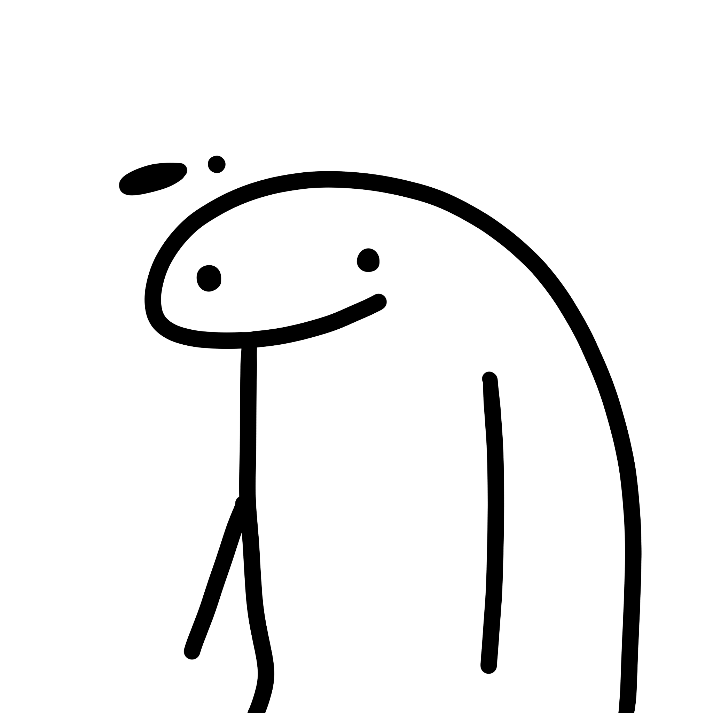
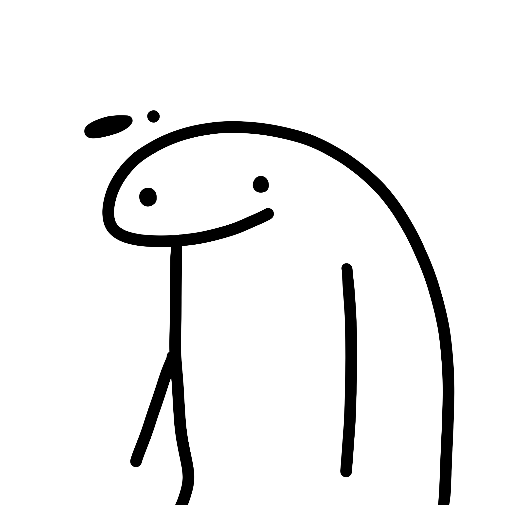
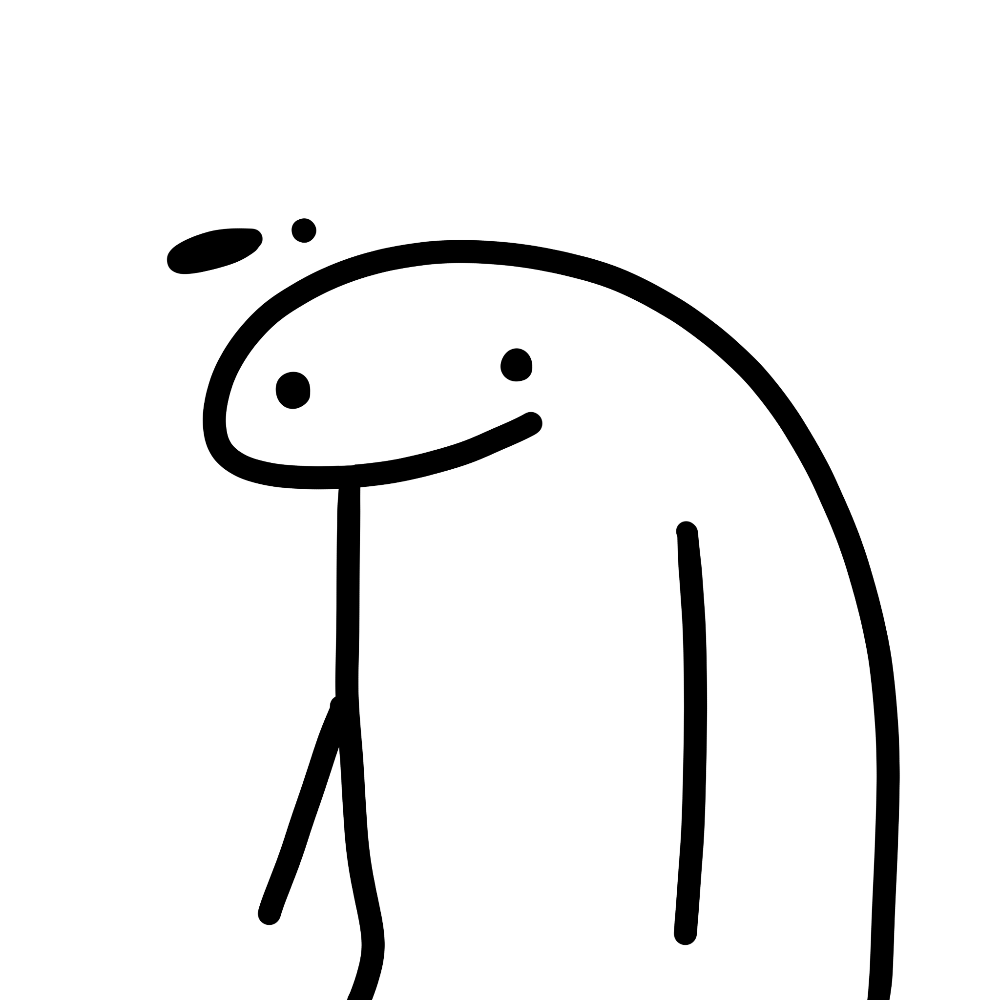
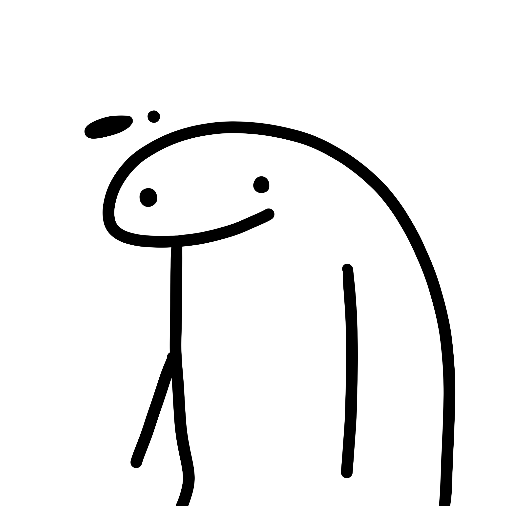

Graffiti

 

 

Graffiti

晴川历历汉阳树，芳草萋萋鹦鹉洲。
The Zhuzhou Yangtze River Bridge is the eighth Yangtze River bridge in Wuhan, and it is the longest three-tower four-span suspension bridge in the world. The main cables of the two main spans and two side spans of the Zhuozhou Yangtze River Bridge are continuously undulating, with simple and rhythmic lines; The Zhuozhou Yangtze River Bridge is the first suspension bridge in Wuhan with bright colors, and the color is "international orange", which has become a rare charming scenery in the Wuhan city skyline.

潋滟江水，浮岚暖翠。
Lights light up the city and outline the stars of the world. On the building, hazy as poetry; Dancing like a song in the streets. Wuhan Erqi Yangtze River Bridge is a highway bridge across the Yangtze River in Wuhan City, Hubei Province, and is also a bridge across the Yangtze River at the northern end of Wuhan Second Ring Road. North to Hankou Development Avenue, south to Wuchang Peace Avenue. The sentence "A natural gap becomes a thoroughfare" describes the important role of the Wuhan Yangtze River Bridge in communicating China's North-South traffic.

多喜乐长安宁，所求皆所愿。
Baotong Temple, founded in the Southern Dynasty Liu Song period (4201479), the initial name of Dongshan Temple, has a history of more than 1600 years. Baotong Temple is built on the mountain, the temple covers an area of more than 110,000 square meters, there are mountain gate, monk bridge, release pond, bell tower, drum tower, Maitreya Hall, Maitreya Hall, Sutras Hall, ancestral Master Hall East and west flower hall, Buddha chanting hall, Jialan Hall, abbot's room and Zen hall, the rear of the temple has Hongshan Pagoda. It is the first Buddhist place in the three Chu dynasties, one of the four famous Buddhist jungles in Wuhan, and the oldest existing monastery in Wuhan.

出门一笑无拘碍，云在东湖月在天。
After more than 30 years of construction, there are now more than 70 pavilions, terraces, buildings, pavilions and various architectural facilities around the East Lake. It can be said that the pavilions and pavilions are golden and bright, and the gardens and gardens are even beautiful. Beautiful landscape, rich vegetation, rich Jingchu customs and unique garden within garden are the four characteristics of the East Lake Scenic spot. According to the natural environment, East Lake is divided into six scenic spots: Listening Tao, white horse, falling wild goose, Luohong, blowing flute and Moshan. Due to its unique natural location, the beauty of East Lake has always attracted tourists from all over the world.

武汉春盛，樱花粉嫩；恰若烟霞作枕，醉后沉沉一甜梦。
East Lake shore, Luojiashan, cherry blossom blossom, with red Windows and green tiles glow, full of trees in full bloom, such as clouds like Xia, gathering into the sea of flowers. The cherry blossoms of Wuhan University are mainly concentrated in the "Cherry Garden", which is the most popular among tourists because of the support of the boys' dormitory and the old library complex in the early buildings of Wuhan University. The building is also named "Cherry Castle" because of its proximity to cherry blossoms.

江汉关，光影如梭的城市记忆。
In 1861, according to Article 10 of the Sino-British Treaty of Tianjin, the British government forced the Qing government to open Zhenjiang, Jiujiang and Hankou as foreign trade ports and set up customs offices. The Jianghan Pass was also established here. The architectural style of the building belongs to the Renaissance style, three-stage composition, with an elegant bell tower in the middle, and a clock with a diameter of 4 meters on all sides of the clock tower, the punctual bell has become a part of the life of Wuhan citizens.